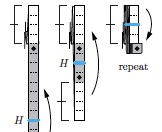
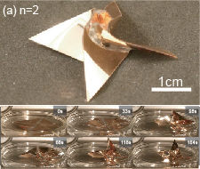
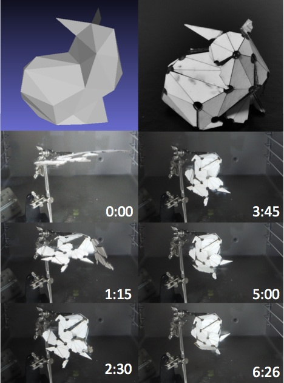
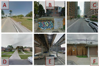
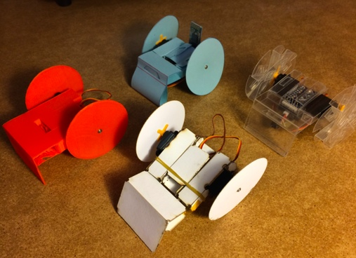
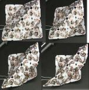
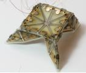
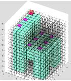

E-mail: dran at csail.mit.edu
Web: www.drancom.com
Publications [Google Scholar]
|

|
13.
Computing 3SAT on a Fold-and-Cut Machine |
|

|
12.
Folding Angle Regulation by Curved Crease Design for Self-Assembling Origami Propellers |
 |
11.
Pouch Motors: Printable Soft Actuators Integrated with Computational Design |
|

|
10.
An End-to-End Approach to Making Self-Folded 3D Surface Shapes by Uniform Heating |
|

|
9.
An Looking Beyond the Visible Scene |
 |
8.
Designing and Programming Self-Folding Sheets |
|

|
7.
A Design Environment for the Rapid Specification and Fabrication of Printable Robots |
|

|
6.
Programming and Controlling Self-Folding Robots |
 |
5. Planning to Fold Multiple Objects from a Single Self-Folding Sheet |
|

|
4. Robotic Origamis: Self-Morphing Modular Robots |
 |
3. Programmable Matter by Folding |
|

|
2. Making Shapes from Modules by Magnification |
 |
1. EM-Cube: Cube-shaped, Self-Reconfigurable Robots Sliding on Structure Surface |
Thesis
Sticker Controller and Sticker Programming for Smart Sheets (Self-Folding Sheets)
Master of Science, Computer Science, MIT, 2011
Scaling of Dynamic Surface Growth Model on Fractal Dimension
Bachelor of Science, Physics, Soongsil University, 2004
Patent
 |
FET (Field Effect Transistor) Nerve Electronic Chip ,10-0765960, KR Byoungkwon An |
Media Coverage (Selected)
MIT Main Page, Bake Your Own Robot, May 30, 2014 [link]
MIT News, Bake Your Own Robot, May 30, 2014 [link]
NBC News, Right Out of the Oven: MIT Scientists Bake Self-Building Origami Robots, May 30, 2014 [link]
Science Daily, New printable robots could self-assemble when heated, May 30, 2014 [link]
R&D Magazine, Bake your own robot, May 30, 2014 [link]
CTV News, MIT designs 'bake-your-own' robots, June 7, 2014 [link]
CNN, Edge of Discovery, Transformers could be a reality!, June 1, 2011
MIT Main Page, Shape-shifting robots, August 4, 2010
[link]
MIT News, Shape-shifting robots, August 4, 2010
MSNBC, 'Programmable matter' may shape future tools, June 28, 2010
Nature News, Origami that folds itself, June 28, 2010Discovery News, Origami Robot Makes Shapes on Demand, July 7, 2010
CNET, Robotics meet origami in self-folding sheets, June 29, 2010
Scientific American, Shifty Science: Programmable Matter Takes Shape with Self-Folding Origami Sheets, June 28, 2010
Popular Science, Video: "Smart Sheets" Can Self-Assemble Into Airplanes, Boats, June 28, 2010
Phys.org, Shape-shifting sheets automatically fold into multiple shapes, June 28, 2010
Harvard Gazette, Shape-shifting sheets automatically fold into multiple shapes, June 28, 2010